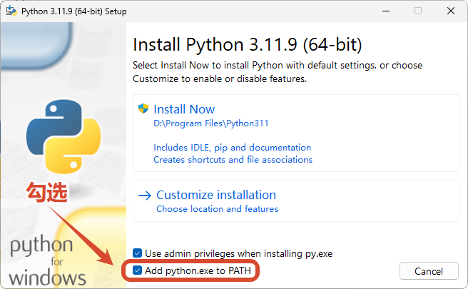
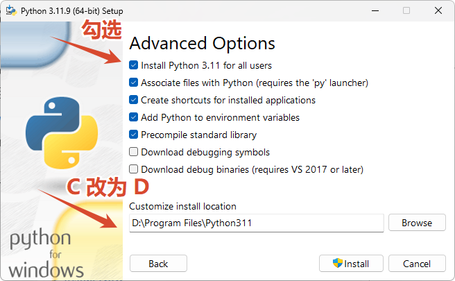
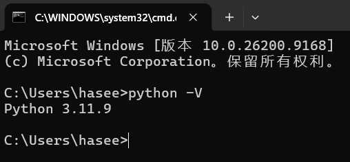

<!DOCTYPE lake>
<h2 data-lake-id="iqd6P" id="iqd6P"><span data-lake-id="u213008cf" id="u213008cf">Python环境安装</span></h2><p data-lake-id="u3f9296ec" id="u3f9296ec"><span data-lake-id="ue51c4cee" id="ue51c4cee">Python官网:</span><a data-lake-id="u494772f1" href="https://www.python.org/" id="u494772f1" rel="noopener noreferrer" target="_blank"><span data-lake-id="ude2aac13" id="ude2aac13">https://www.python.org/</span></a></p><ol list="uf8bdb703"><li data-lake-id="u810e2f4a" fid="u0f325a3d" id="u810e2f4a"><span data-lake-id="ud8b27d27" id="ud8b27d27">选择</span><strong><span data-lake-id="ucc44ab12" id="ucc44ab12">Python3.x</span></strong><span data-lake-id="u5fc82750" id="u5fc82750">版本下载，建议使用稳定版</span><code data-lake-id="u67811559" id="u67811559"><span data-lake-id="u78568f93" id="u78568f93">3.11.9</span></code><span data-lake-id="u706afa49" id="u706afa49">（Stable Releases），绝大数库对3.11版本Python已良好支持，但对3.14及以上支持不完全：</span></li></ol><p data-lake-id="u39c45130" id="u39c45130" style="text-indent: 2em"><a data-lake-id="u23190764" href="https://www.python.org/ftp/python/3.11.9/python-3.11.9-amd64.exe" id="u23190764" rel="noopener noreferrer" target="_blank"><span data-lake-id="u616280c7" id="u616280c7">https://www.python.org/ftp/python/3.11.9/python-3.11.9-amd64.exe</span></a></p><ol list="uf8bdb703" start="2"><li data-lake-id="udfd4c6b1" fid="u0f325a3d" id="udfd4c6b1"><span data-lake-id="u66a0a2af" id="u66a0a2af">安装Python（记得勾选Add python.exe to PATH）</span></li></ol><p data-lake-id="uf14d0190" id="uf14d0190"></p><p data-lake-id="u1306a6ed" id="u1306a6ed"></p><ol list="uf8bdb703" start="3"><li data-lake-id="u7d88a5d1" fid="u0f325a3d" id="u7d88a5d1"><span data-lake-id="uab8860cf" id="uab8860cf">验证是否安装成功打开命令行输入如下命令查看python版本号，</span><code data-lake-id="u32ef0b34" id="u32ef0b34"><span data-lake-id="u50ba941f" id="u50ba941f">Win+R</span></code><span data-lake-id="ufadab2e6" id="ufadab2e6">输入cmd打开控制台，输入如下命令后按回车键。</span></li></ol><span class="yuque-card-unsupported">[codeblock]</span><p data-lake-id="ub6aefdbb" id="ub6aefdbb"><span data-lake-id="u38715da3" id="u38715da3">如果出现版本号说明安装成功</span></p><p data-lake-id="u8d5ed9fe" id="u8d5ed9fe" style="text-align: center"></p><p data-lake-id="ue2a49980" id="ue2a49980"><br/></p><p data-lake-id="uaf318820" id="uaf318820"><span data-lake-id="u9c3aafac" id="u9c3aafac">如果没有正常显示版本号，请关闭重开控制台。还不行再重新安装，并勾选</span><code data-lake-id="uad2f4dfa" id="uad2f4dfa"><span data-lake-id="uf7c85e26" id="uf7c85e26">Add python.exe to PATH</span></code><span data-lake-id="uc83bf8b9" id="uc83bf8b9">。</span></p><blockquote class="lake-alert lake-alert-warning" data-lake-id="u76bc19e2" id="u76bc19e2"><p data-lake-id="u7e85c994" id="u7e85c994"><strong><span data-lake-id="u9efa0cf4" id="u9efa0cf4">注意：</span></strong></p><p data-lake-id="ub127736f" id="ub127736f"><span data-lake-id="ud13c3d8b" id="ud13c3d8b">Windows7请安装</span><code data-lake-id="uab19dc03" id="uab19dc03"><span data-lake-id="u79d209a9" id="u79d209a9">3.8.10</span></code><span data-lake-id="uea96af05" id="uea96af05">及之前的版本：</span><a class="yuque-card-link" href="https://www.python.org/downloads/release/python-3810/" rel="noopener noreferrer" target="_blank">bookmarkInline：bookmarkInline</a></p></blockquote><h2 data-lake-id="Fnw1J" id="Fnw1J"><span data-lake-id="ueb8f2b70" id="ueb8f2b70">第一个python程序</span></h2><p data-lake-id="u21e4dad5" id="u21e4dad5"><span data-lake-id="u8192ef17" id="u8192ef17">创建</span><code data-lake-id="u8363cab9" id="u8363cab9"><span data-lake-id="u3e97a6c9" id="u3e97a6c9">hello.py</span></code><span data-lake-id="ud0370b77" id="ud0370b77">文件,输入如下内容:</span></p><span class="yuque-card-unsupported">[codeblock]</span><p data-lake-id="u0aa64e65" id="u0aa64e65"><span data-lake-id="ub9f5d695" id="ub9f5d695">在文件所在目录空白处，按住Shift+鼠标右键，点</span><code data-lake-id="u3caaac12" id="u3caaac12"><span data-lake-id="u8e5091b7" id="u8e5091b7">在此处打开Powershell窗口</span></code></p><p data-lake-id="uff0d3da2" id="uff0d3da2"></p><p data-lake-id="uf805a38d" id="uf805a38d"><span data-lake-id="u1dad02ef" id="u1dad02ef">输入</span><code data-lake-id="u51c5ca73" id="u51c5ca73"><span data-lake-id="u231af830" id="u231af830">python hello.py</span></code><span data-lake-id="uccee021e" id="uccee021e">后按回车，输出如下内容:</span></p><p data-lake-id="ub3de3d9c" id="ub3de3d9c"></p><h2 data-lake-id="GU2MP" id="GU2MP"><span data-lake-id="u839cc4bc" id="u839cc4bc">相关文档</span></h2><h3 data-lake-id="k6tTk" id="k6tTk"><span data-lake-id="uc4331684" id="uc4331684">官方文档</span></h3><a class="yuque-card-link" href="https://docs.python.org/zh-cn/3.11/" rel="noopener noreferrer" target="_blank">bookmarklink：bookmarklink</a><h3 data-lake-id="TkxER" id="TkxER"><span data-lake-id="ub60861c1" id="ub60861c1">Python标准库</span></h3><a class="yuque-card-link" href="https://docs.python.org/zh-cn/3.11/library/index.html" rel="noopener noreferrer" target="_blank">bookmarklink：bookmarklink</a><h3 data-lake-id="nxfP6" id="nxfP6"><span data-lake-id="u3092c3d9" id="u3092c3d9">教程文档</span></h3><a class="yuque-card-link" href="https://docs.python.org/zh-cn/3.11/tutorial/index.html" rel="noopener noreferrer" target="_blank">bookmarklink：bookmarklink</a>